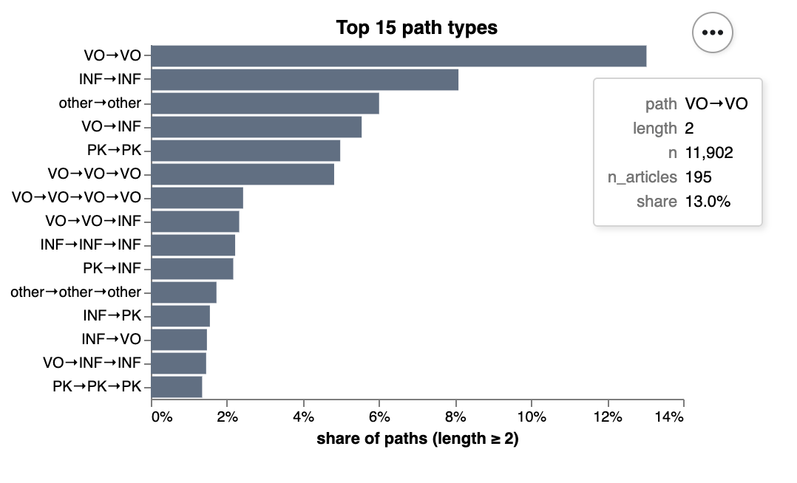
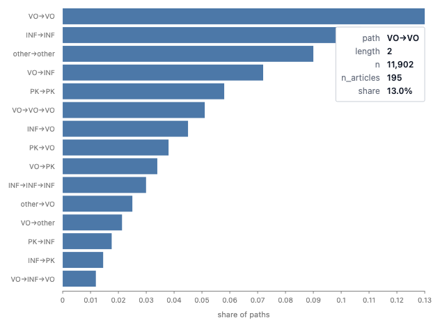

The issue's bar chart
The default content is every field with one value on the bar. Here that is the whole row. Only the first row of data is from the issue; the rest are invented.


Proposed
chart(pathTypes)
.flow(spread({ by: "path", dir: "y" }))
.mark(rect({ w: "share" }).tooltip());
Proposed, a list of fields with formats
rect({ w: "share" }).tooltip(["path", "n", field("share").format(percent)]);
Proposed, Python
chart(path_types).flow(spread(by="path", dir="y")).mark(rect(w="share").tooltip())
rect(w="share").tooltip(["path", "n", field("share").format(percent)])Runs today (prototype)
// helpers.ts: rowTooltip, beside, percent1, thousands
const format = { n: thousands, n_articles: thousands, share: percent1 };
chart(pathTypes, { w: 520, h: 400 })
.flow(spread({ by: "path", dir: "y", spacing: 4 }))
.mark(rect({ w: "share" }).name("bars"))
.layer(
chart(selectAll("bars"))
.flow(
filter((bar) => bar.datum[0].path === focus()),
group({ by: "path" })
)
.mark((bar) =>
beside(
bar[0],
rowTooltip(bar[0].datum[0], { format }),
// the side is picked by hand from the datum
bar[0].datum[0].share > 0.09
? { side: "bottom", align: "end", gap: 4 }
: { side: "right" }
)
)
);Fork: its own modifier, or an option of label
Pick
rect({ w: "share" }).tooltip();
.tooltip() is its own modifier, so each default fits
its job.
Alternative
rect({ w: "share" }).label(content, { on: pointer() });One operator fewer, but one option would then flip three defaults at once: content, room, and which marks.